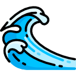
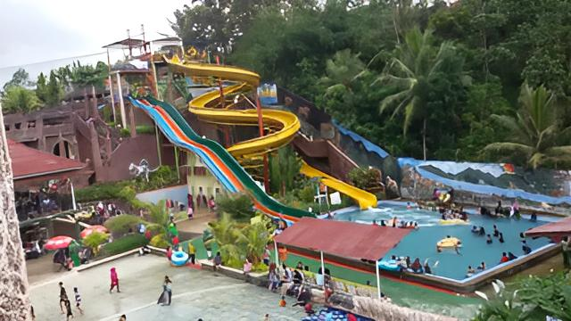

Kolam Ombak
Kolam ini sangat cocok untuk anak-anak dan orang dewasa yang ingin menikmati ombak buatannya.

Kolam Naga
Wahana ini memiliki kolam yang panjang seperti naga dan memiliki arus air yang cocok untuk bersantai.
Crazy Slide
Wahana ini memiliki 3 slide berjejer yang kecepatan turunnya lebih menantang

Crazy Slide dan Fast 2 Furious
wahana ini akan membuatmu merasa seperti sedang balap mobil karena kecepatan turunnya yang cepat. Tingginya bahkan sekitar 24 sampai 26 m yang tentunya kalau sudah berseluncur akan sangat cepat.
Gallery" Slanik Waterpark merupakan salah satu waterpark terbesar di Lampung. Tempat ini bagus untuk anak-anak. Mereka memiliki banyak permainan waterpark seperti dragon river, olympic pool, beach wave, water boom, dll. "

Yanto
Pengunjung